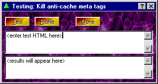

A very useful feature of Proxomitron is the Matching Expression Test Window. It lets you see first-hand if a particular expression will match any given text, and (if applicable) show what the resulting text will look like. No more web page reloading just to check every little modification you make to a filter - just "paste and test".
You get here by pressing the "test" button in the Web Page Filter Editor or selecting "Test Matching" from the right-click context menu of the HTTP filter or URL matching windows.

Simplicity was never easier...
Using the tester is really pretty straight-forward. Just enter some stuff to match in the top window (this will often be HTML source snipped from a web page), and press the TEST button. The result window will either show you what results your match has wrought, or tell you the rule simply didn't match at all.
This will also work to test URL matches. In this case right-click over the filter's URL match and select "Test matching" from the menu. Now, instead of some HTML, just enter an example URL (minus the http:// bit) and press test. The output window will tell you if the URL will match your filter's expression or not.
We're always open...
Another unusual thing about the tester window is it doesn't have to be closed to go back to the filter editor. You can simply flip between the editor and the tester window and any changes made to a filter will be immediately recognized the next time you press "test". This makes it very easy to see what effect a change will have before you actually update the filter by pressing the editor's "OK" button.
 Return to main index
Return to main index